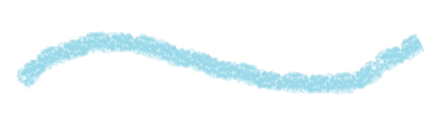
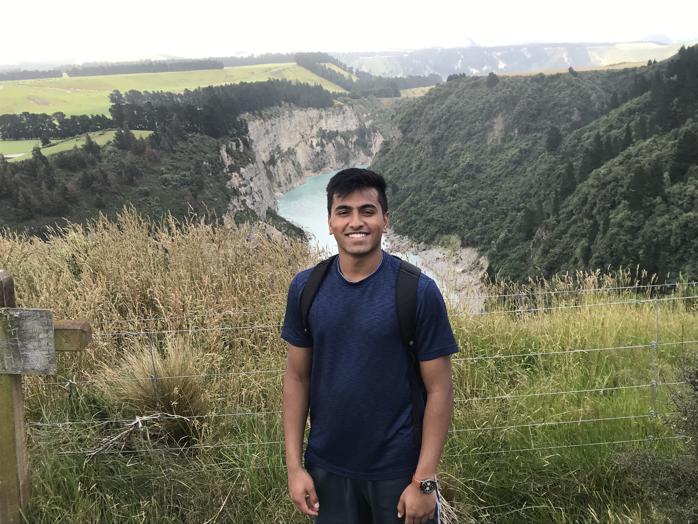
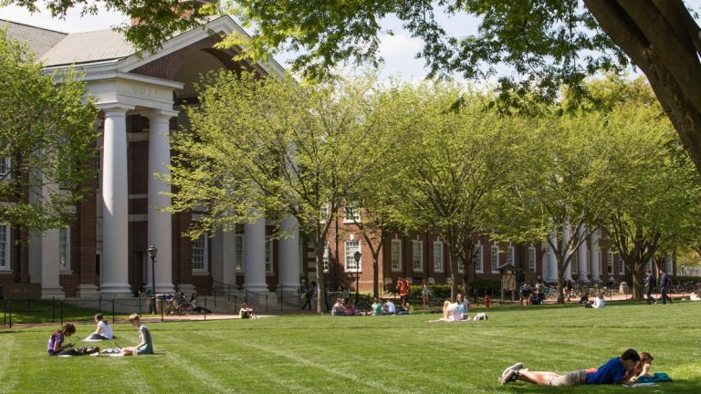

About Me


Hello! My name is Nishant Chintala (you can call me Nish). I am a sophomore at the University of Delaware, studying Computer Science and Finance.
I strive to be a student leader on campus and inspire my peers to step out of their comfort zones and try new things (just as I did in my first year). Stepping out of my comfort zone allowed me to recognize some of my new interests, like playing ultimate frisbee, analyzing stocks, and learning about entrepreneurship. Hopefully, I can take all of my life experiences and put it towards achieving my goal of starting my own business.
Education
I study at the University of Delaware (Go Blue Hens!) and am currently in my second year. I am majoring in Computer Science and Finance (hold on, I'll get to it).

Why Computer Science?
I have always liked puzzles. As a kid, I enjoyed solving, 100, 200, even 1000 piece puzzles with my dad, mom, and brother. I liked how the pieces fit together, each piece having an impact on the final picture. Get one piece wrong and the entire final picture is incorrect.
Computer Science is very similar. Each small variable, method, class, or object plays a role in the end functionality of the program. When I code, I think of how each aspect of the program serves a purpose in terms of getting the anticipated end result. My brain simply works like that, connecting every small detail to the big picture. And, just like that, a young kid who loved doing puzzles became a computer scientist.
Why Finance?
Many people have great ideas. However, why is it so often that those ideas get lost due to fear of starting a business or the lack of knowledge on how to start one? It may take an engineer to make the product, but it takes a businessman/woman to sell it.
I realized this and thought "what's stopping me from taking on both fields?" I chose finance because of my interest with handling and managing assets and my newfound interest in the stock market. Hopefully, somewhere down the road, I can use my computer science knowledge to create a product and my finance knowledge to give it to the world.
My Goals

Be Creative
As Steve Jobs once said, "Innovation distinguishes between a leader and a follower." I live by this quote, constantly trying to think of new ingenious ideas as simple as a fidget spinner coffee-stirrer or as complex as a startup idea to deploy a new, more efficient platform for nonprofits to connect with volunteers. Only with creativity will there be change and growth.
Be Passionate
Whoever said the moon landing was going to be a piece of cake? Every and any great accomplishment never came about without a burning passion to accomplish a goal. My passion is what keeps me motivated to succeed regardless of any obstacles in my path. Ultimately, my passion is what will determine who I am and what I will achieve.
Be Open
I would have never thought in a million years that I would win an intramural ultimate frisbee championship. Nor did I think that I'd find myself at a Hackathon at Princeton, guzzling down Red Bull as I code through all hours of the night. But my open attitude and willingness to try new things allowed me to see my new passions. In continuing to maintain this open attitude, not only will I try new things, but I will also meet new people, go to new places, and discover the nuances that allow me to enjoy life.